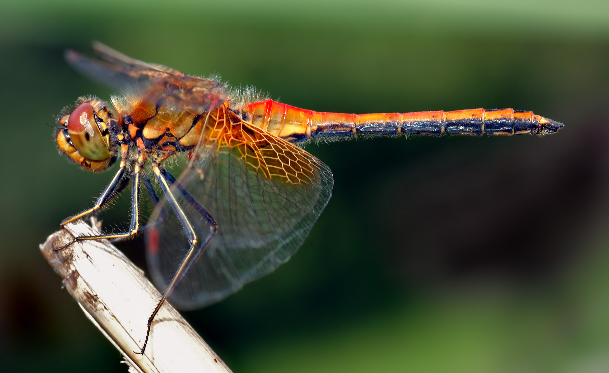

1 Hizkuntzaz
Hizkuntza zer den definitu behar genuke, hizkuntzaren didaktikaz aritu aurretik. Baina ez dago definizio bakar eta eztabaidaezinik: hizkuntza zer den azaltzeko ikuspegi anitz eta osagarriak daude. Hori dela eta, gai honetan hainbat ikuspegi jorratuko ditugu, hizkuntzaren funtzio nagusiak ulertu ahal izateko.
1.1 Hausnarketarako abiapuntuak
Hizkuntzaz hitz egiten dugunean, zer datorkigu burura? Hausnarketarako, ondoko galderak:
- Zer da hizkuntza bat?
- Hizkuntza ikasten dugu? Ala beste zerbait gertatzen da? Zer?
- Ama hizkuntza edo etxeko hizkuntza eta beste guztiak berdin lortzen ditugu? Berdin lortzen dugu jakitea, alegia?
- Eta berdin umetan edo nagusitan?
- Etxean ikasten badugu hizkuntza, eskolan zer egiten dugu? Zein alde dago batetik bestera?

Esan dezakegu hizkuntza dela komunikazio tresna, pentsatzeko tresna, ikasteko tresna eta sortzeko tresna. Horrek planteatzen du beste galdera bat ere: ea hizkuntza tresna hutsa den, ala gu geu garen neurri handi batean hizkuntzaren emaitza. Ikuspegi horiek hurrengo ataletan garatuko ditugu.
1.2 Hizkuntza: komunikazio tresna
Gizakion arteko hartu-emanak erregulatzeko eta kontrolatzeko hizkuntza darabilgu. Tresna posibleen artean eraginkorrena dela esan dezakegu: oso esanahi konplexuak adieraz ditzakegu baliabide urrien bidez. Gizakiok hizkuntzaren erabileraz “orain” eta “hemen” gaindi dezakegu, animaliek ezin dezaketen moduan.
Komunikatzea soilik ez, zer komunikatzen den ere kontuan izan behar da. Partikulazki, lengoaia bidez baino ezin daitekeena komunikatu.
– Tough (1996), 14. orr. (JAk itzulia)
Hizkuntza komunikazio tresna gisa erabiltzen dugunean, gizarte-harremanak eta informazioaren transmisioa ahalbidetzen dugu, eta gizakiaren komunikazio ahalmen sinbolikoak animalietatik bereizten gaitu.
Hizkuntza komunikatzeko ezinbestekoa bada, horrez gain gure pentsatzeko eta ikasteko gaitasunaren oinarrian ere badago. Hurrengo atalean ikusiko dugu nola.
1.3 Hizkuntza: pentsatzeko eta ikasteko tresna
Hizkuntzaren bitartez mundua ezagutzen eta ulertzen dugu, hizkuntzak berak horretan laguntzen digulako. Hizkuntza ez da informazioa transmititzeko bakarrik: gure pentsamendua antolatzeko eta ikasteko ere ezinbestekoa da. Munduan eragiteko hizkuntza darabilgu jarduerak hizkuntzaren bitartez planifikatzen, antolatzen eta kontrolatzen ditugunean.
… lengoaiaren bitartez, amak umeari erakusten dizkio eraiki behar duen munduaren planu semantikoak. Errealitate gordina ez daiteke habitatu: zentzua eman behar zaio, zatitu, alor eta sailetan banatu behar da eta euren arteko bideak eta hartu-emanak eraiki behar dira, batetik bestera igarotzeko. Nahitanahiez, haurrak eraiki behar du bere bizi-gunea, errealitatearen jabe egin behar baita. Baina latza litzateke arkitektura bera ere asmatu beharra. (…) Hizkuntzari eskerrak, zure esperientzien menpekoa ez zara soilik, beste guztien eserientziak ere baliatu ditzakezu.
Hizkuntzak, norbanakoari mundua eraikitzen uzteaz gain, horren jabe egiten ere uzten du. … Amak ez dio soilik ordena ezartzen mundu objektiboari, haurraren subjekturik gabeko subjetibotasunari ere ezartzen dio … Lengoaia, besteekiko komunikatzeko bitarteko legez hasten dena, umeak bere buruarekin komunikatzeko bitarteko bilakatzen da, egintzak antolatzen lagunduaz. Adimena eraikitzeko berebiziko garrantzia du hizkuntzaren funtzio antolatzaileak.
– Marina (1993) (JAk itzulia)
… A través del lenguaje, la madre le enseña al niño los planes semánticos del mundo que tiene que construir. La cruda realidad no es habitable: hay que darle sentido, segmentarla, dividirla en estancias y construir pasillos y relaciones para pasar de uno a otro. Es la niña la que tiene que construir su hogar de manera irremediable, ya que necesita apropiarse de la realidad, pero sería un gran fastidio si tuviera que inventar la arquitectura. (…) gracias al idioma no dependerá solo de tu experiencia, sino que podrás aprovechar la experiencia de los demás.
… El lenguaje, además de permitir que el sujeto construya el Mundo, le permite tomar posesión de sí mismo … La madre no solo introduce orden en el mundo objetivo, sino también en la subjetividad sin sujeto del niño … El lenguaje, que comienza como un medio de comunicación con los demás, se convierte en un medio para que el niño se comunique consigo mismo, ayudándole a regular sus acciones. Esta función reguladora es de enorme importancia para la construcción de inteligencia …
– Marina (1993)
Ikuspuntu hau ez dago bakarrik: Vygotskyk (1965) ere nabarmendu zuen hizkuntzaren funtzio antolatzailea eta pentsamendua garatzeko duen garrantzia.
1.3.1 Adibideak
Ideia horien isla ikusteko, Wells (1988) liburuan hainbat elkarrizketa jaso ziren. Hona hemen batzuk:
Elizabeth, lau urteko haurra, amari so dago, beheko suko errautsak pala batekin batu eta balde batera zelan botatzen dituen ikusten.
E: Zertarako egiten duzu hori?
M: Batzen eta kanpora eramaten babil, gero aitak ortuan zabaltzeko
E: Eta zertarako botako ditu ortuan?
M: Lurra ontzeko.
E: Eta horrela ondo hasiko dira landarak?
M: Bai.
E: Eta hori, zergatik?
M: Gogoan duzu aurrekoan azaldu nizula zuk denetarik jan behar duzula, arraultzak eta azak eta porru-patatak neska handia hazteko?
E: Bai.
M: Ba, landareek ere denetarik behar dute. Eta haiei ondo doakienetariko bat errautsa da.– Wells (1988, p. 79) . (JAk gaztelaniazko itzulpenetik euskarara itzulia)
Kontuan izan hau ez dela jatorrizko testua, ingelesezkoaren itzulpena baino ez da-eta
Elisabeth, a la edad de 4 años, observa a su madre, que recoge con una pala las cenizas del hogar y las hecha en un cubo:
E: ¿Para qué haces eso? M: La estoy recogiendo y llevándola afuera para que papá la eche por el jardín
E: ¿Por qué ha de echarlas por el jardín? M: Para que esté bien abonado.
E: ¿Así crecerá la hierba?
M: Sí.
E: Y eso ¿por qué?
M: ¿Te acuerdas que te expliqué que tú necesitas comer cosas distintas como huevos y col y budín de arroz para hacerte grande?
E: Sí.
M: Pues las plantas también necesitan cosas distintas. Y una de las cosas que les van bien es la ceniza.– Wells (1988)
James, hiru urte eta erdi duela, etxeko lorategian jolasean izan da. Amak etxera eraman nahi du galtzerdi eta zapata lokastuak aldatzera, baina, etxera sartzeko dagoela, txoria ikusten du:
M: Ea. Horrela, zapata bat jantzita.
J: Txoria ikusten dut.
M: Zer ikusi, bihotza??
J: Txoritxoa ikusten dut.
M (ahopeka): Hor? Kanpoan?
J (atzamarraz erakutsiaz eta ahopela):Bai. Ikusten dut
[Biek ahopeka segitzen dute]
M: Ezer jaten dabil?
E: Ez.
M: Han doa… -txoritxoa paperezko bortsa batera doa eta zati batzuk hartzen ahalegintzen da- Oh, hor jateko apur bat dauka. Eta uste dut zatitxu batzuk hartuko dituela kabia egiteko. James, egon apur batean banoa…Jamesek hurbilagotik ikustera irten nahi du, baina momentu horretantxe txoritxoa hegaz hasten da.
J: Txoritxoa joan egin da.
M (tonu normalean): Joan egin da?
J: Bai.– Wells (1988, p. 81)
James, a la edad de 3 años y medio, ha estado jugando en el jardín. Su madre quiere llevárselo para cambiarle los calcetines y los zapatos embarrados pero, al entrar, el niño ve un pájaro:
M: Vamos a ver. Así – una zapatilla puesta.
J: Veo un pájaro.
M: ¿Un qué, cielo?
J: Veo un pájaro.
M (en un susurro): ¿Ahí? ¿Afuera?
J (señalando y susurrando): Sí. Lo veo. (Los dos siguen hablando en susurros)
M: ¿Se está comiendo algo?
E: No.
M: Va a la –la bolsa de papel a intentar coger unos trozos –Oh, ahí tiene un poco de comida. Y supongo que cogerá unos trozos de la bolsa para hacer su nido debajo del tejado. James, espera un poco que voy…James quiere salir a verlo más de cerca, pero en ese momento el pájaro alza el vuelo
J: El pájaro se ha ido.
M (hablando de nuevo a un volumen normal): ¿Ya se ha ido?
J: Sí.– Wells (1988), 81 or.
Simonek, lau urte eta bederatzi hilekoa, sagarra jan berri du eta haziekien batu ditu. Amari azaltzen dio zer egin litekeen horiekin.
S: Hazia haz daiteke. Batzuk erein ahal ditugu. Sagar-hazi askotxu ditut eta, gehiago lortzen baditut, aitak eta biok egunen batean irten ahal gara, euririk egiten ez duen egunen batean, eta haziak erein genitzake. Edo nik erein ahal ditut bihar.
– Wells (1988), 81 or.
Simon, con 4 años y 9 meses, acaba de comerse una manzana y se ha quedado con las pepitas. Le explica a su madre qué podría hacer con ella
S: Una pepita es una semilla. O sea que puede crecer. Y podríamos cultivar algunas. Tengo unas cuantas semillas de manzana –semillas y pepitas de manzana- y si consigo aún más, papá y yo podríamos salir un día, un día que no llueva, y podríamos plantar las semillas. O podría plantarlas yo mañana
– Wells (1988), 81 or.

Hizkuntza ez da komunikatzeko tresna hutsa, baizik eta pentsatzeko eta ikasteko oinarria. Haurrek hizkuntzaren bidez mundua zatitu, ulertu eta antolatzen dute, eta besteen esperientziaz ere baliatzen dira.
Pentsatzeko eta ikasteko ezinbestekoa bada hizkuntza, gure adierazpen sortzailearen oinarrian ere badago. Hurrengo atalean ikusiko dugu nola erabiltzen dugun hizkuntza sormenaren ikuskeran ere.
1.4 Hizkuntza: sortzeko tresna
Hizkuntza bera ere sortzeko tresna da. Ez da bakarrik komunikatzeko edo pentsatzeko baliabidea: adierazpen estetiko eta ludikoaren oinarrian ere badago. Hori argi ikusten da adibide hauetan:
- Poemak
- Ipuinak
- Kantak
- Ahokorapiloak
- Igarkizunak
- Hitz-jokoak
Kulturalki zabalpen handikoak dira bertsolaritza edo errefrauak, esate baterako.
Ago ixiletik ez da ezer jakiten
Erderaz bat
Hombre refranero, hombre majadero
Errefrauen kasuan, gainera, zabalpen kulturalak ematen dio egiagoaren tokia, errefrauok erabiltzen diren inguruan.
Hizkuntza sormen-tresna da, gure kultura eta irudimena adierazteko bide ugari eskaintzen dituena. Sormen hori, gainera, sozialki partekatua da (bertsoak, errefrauak), hizkuntza aberastuz eta belaunaldiz belaunaldi transmitituz.
Hizkuntzaren funtzio sortzaile hau ulertzea ezinbestekoa da irakasleentzat ere. Horregatik, ondoren hausnarketa kolektiboa proposatzen da.
Hurrengo puntuak taldeko hausnarketa bat egiteko dira, ikuspegi bikoitzetik: norbanako legez eta Haur Hezkuntzako irakasle(gai) legez.
- Gure hizkuntzei zein erabilera ematen diegu? (H1/H2/…)
Nahi duguna nahi dugun moduan adierazteko balio digu? - Irakasle gisa, zer garrantzia du ikasgelan hizkuntza aberatsa eta adierazkorra erabiltzea?
- Zer egin dezakegu hizkuntza “tutu triste” bat balitz bezala erabili beharrean haren gaitasun guztiaz baliatzeko?
- Eta HHko gelan zein neurritan ematen zaie aukera umeei hurrengoak egiteko?
- Ideiak ahalik eta ondoen formulatzeko, haien ekintzak justifikatzeko, esperimentatzen dutenaz hausnartzeko eta arrazonatzeko, argumentatzeko, azalpenak emateko, planifikatzeko, kontatzeko…
- Haien mundu emozionalarekin konektatu eta sentimenduak eta emozioak hitzez adierazteko, haietaz kontzientzia hartzeko, emozioak eta sentimenduak konpartitzeko?
- Hizkuntzarekin jolasteko, sortzeko eta gozatzeko?
- Ideiak ahalik eta ondoen formulatzeko, haien ekintzak justifikatzeko, esperimentatzen dutenaz hausnartzeko eta arrazonatzeko, argumentatzeko, azalpenak emateko, planifikatzeko, kontatzeko…
Irakasle gisa, zer-nolako esperientziak eskaini ahal dizkiegu umeei hizkuntzaren erabilerari dagokionean? Zelan erabili dezakegu elkarrizketa? Zer-nolako estrategiak erabili ditzakegu?
1.5 Eskolaren eginkizuna hizkuntza arloan
Ikasleen hizkuntza-komunikaziorako gaitasuna garatzen laguntzea da eskolaren eginkizun nagusietako bat. Helburua da ikasleek hizkuntza eraginkortasunez erabil dezaten euren bizitzako egoera eta behar guztietan: ikasketa akademikoetan, harreman pertsonaletan eta gizartean parte hartzeko.
Eskolak hizkuntzaren bidez ikasleen komunikazio-gaitasuna indartu behar du, bizitzako testuinguru guztietarako baliagarria izan dadin.
Ikuspegi orokor honetatik, curriculumean hizkuntzari buruz ezartzen diren printzipio eta irizpide zehatzetara igaroko gara.
1.5.1 Hizkuntza HHko curriculumean
Eskolan hizkuntza lantzeko helburua ez da soilik komunikazioa garatzea, baizik eta hizkuntza beste hizkuntzekin batera (musika-hizkuntza, gorputz-hizkuntza, arte-hizkuntza, …) eremu bakarrean ulertzea. Curriculumean horrela jasotzen da:
8. artikulua Hizkuntza-esparrua.
Hezkuntza-sistemaren helburua da haur guztien hizkuntza- eta komunikazio-trebetasunak kulturarteko ikuspegi eleaniztun batetik abiatuta garatzea. Horretarako, bi hizkuntza ofizialak ikastea sustatuko da, haurren familien hizkuntza kontuan hartuta, eta euskara sustatuko da komunikazio-hizkuntzatzat. Haurrak atzerriko hizkuntza bat ikasten eta erabiltzen hasteko irakaskuntza ere eman ahal izango dute ikastetxeek.
Hizkuntzen irakaskuntza eta ikaskuntza antolatzeko eta hizkuntzak tratatu eta erabiltzeko irizpideak haurren eta haien ingurunearen errealitate soziolinguistikoa kontuan hartuta zehaztuko dira, ikastetxeen autonomiaren esparruan. Indarrean den legediarekin bat etorrita, ikastetxeak hartzen dituen erabaki guztiak ikastetxearen Hezkuntza-proiektuaren barruko Hizkuntza-proiektuan zehaztu behar dira, zeinetan planifikatu behar baitira haurrek hizkuntzak ikasteko, erabiltzeko eta hizkuntzekiko jarrera positiboa garatzeko bideak. Hezkuntzaren arloko eskumena duen sailak Hizkuntza-proiektuon jarraipena eta ebaluazioa egingo du.
Ikastetxean bertan garatzen diren jardueretan eta kanpo-proiekzioko jardueretan adierazpidea euskara izatea sustatu eta ziurtatuko da.
Komunikazio- eta hizkuntza-konpetentziaren garapena zeharka landuko da curriculumeko arloen testuinguruan, eta, horretarako, hizkuntza testuinguruan kokatutako egoera funtzional, atsegin eta esanguratsu batean ikastea eta irakastea bermatu behar da.
Euskal Hezkuntza Sisteman berandu sartzen diren ikasle atzerritarrak hartzeko eta haiei hizkuntza-arreta emateko, ikasle horien inklusioa ahalbidetuko duten prestakuntza-programa integralak beharko dira.
Hezkuntzaren arloko eskumena duen sailak irakasleak prestatzeko eta trebatzeko plan bat egingo du, hizkuntzen esparruan hizkuntza- eta metodologia-konpetentziak hobetzeko.
– «75/2023 dekretua, maiatzaren 30ekoa, Haur Hezkuntzaren curriculuma zehaztu eta Euskal Autonomia Erkidegoan ezartzekoa.» (2023)
Curriculumean hizkuntzak ikasleen garapen integralerako gako gisa ulertzen dira, ikuspegi eleanitz eta kulturarteko baten barruan. Euskararen sustapena eta hizkuntza-proiektuaren plangintza funtsezkoak dira.
Curriculumean ezarritako ikuspegi orokorretatik, ikasle indibidualen hizkuntza-eskurapenean eragin handia duen kontzeptu batera igaroko gara: aro kritikoa.
1.6 Aro kritikoa
Hizkuntzaren jabekuntzan behin eta berriz aipatzen den kontzeptua da aro kritikoa. Baina zer esan nahi du, benetan? Ideia nagusia da badagoela denboraldi edo garai berezi bat, zeinetan hizkuntzak eskuratzeko gaitasuna bereziki bizia eta eraginkorra den. Aldi hori behin igarota, hizkuntza berrien eskurapena zailagoa edo mugatuagoa izan litekeela proposatu izan dute hainbat autorek.
Hala ere, ez dago guztiz argi aro kritiko bakarra den, ala hizkuntza guztientzat eta hizkuntza-trebetasun guztientzat berdin aplikatzen den. Are gehiago, galdera batzuk zabalik daude: adibidez, irakurmena, ahozkera edo ulermena aldi berean murrizten al dira? Eta aro kritiko hori gaindituta, zer gertatzen da hizkuntza berri bat ikasteko?

Selinkerren ustez (1972) beste hizkuntza batean arrakasta osoa lortzen da jatorrizko hiztun bat bezala bezain ongi hitz egiterakoan. Ados zaude?
Aro kritikoa, Penfield eta Roberts (1959)
CPH, (Critical Period Hypothesis): Penfield & roberts (1959)
Burmuinean […] zauriak nozitu dituzten haurrak kapaz dira hizkuntza berriro ikasteko. Burmuinean antzeko zauriak izandako helduek, aitzitik, ez dute gauza bera egiterik.
Perales (2004)(21)
Autore askok ikuskera desberdinak hartu dituzte gaiaren gainean, baina aro kritikoren bat askok identifikatu dute. Desberdin, baina identifikatu, horrela honela laburbil daitezke esanguratsuenak:
Gaur egungo ikerketek erakutsi dute aro kritikoaren hipotesia ez dela modu bakarrean uler daitekeen proposamena. Autore batzuek hizkuntza gaitasun guztientzat epe bera iradokitzen dute, beste batzuek berriz trebetasun bakoitzarentzat muga desberdinak. Gainera, lehen hizkuntzaren eta bigarren hizkuntzaren kasuak bereizi behar dira. Horregatik, Singletonek (2005) dio CPH “kolore askotako berokia” dela, interpretazio eta aplikazio anitz dituen teoria bat dela.
Aro kritikoaren inguruan ez dago adostasun bakarra. Denboraren mugak desberdin ulertzen dira, eta ikerketek erakusten dute faktore askok baldintzatzen dutela hizkuntza-eskurapena (kognitiboak, sozialak, afektiboak…).
Ikuspegi teoriko hau jorratu ondoren, artikulu zehatz bat irakurri eta galdera bidez sakonduko duzu gaian euskararen berezko ikuskera ere emanaz.
Irakurri Barreña (1994) artikulua eta erantzun dagozkion itemak (banaka).
- Zelan ulertzen dute sortzaileek delako Gramatika Unibertsala?
- Zelan liteke gramatikaren eta sintaxiaren jabekuntza bideratzen duen ahalmena gizakiok genetikoki daukagula esatea?
- Zein motatako hornia da giza hizkuntzaz jabetzea ahalbideratzen duena?
- Baina zelan izan liteke haurrak bere ama-hizkuntzaz jabetzea, jasotzen duen hizkuntz esperientzia mugatua eta okerrez betea bada?
- Zer da Gramatika Unibertsala?
- Zertzuk dira hizkuntzaren parametroak? Adibideak eman.
- Nola ikasten du haurrak hizkuntza? Entseiu / errakuntza? Hurrenkerarik bada?
- Zein adinarekin hasten da haurra ergatiboa edo pluralaren komunztadura erabiltzen? Eta autozuzentzeko gaitasuna?
- Zertan oinarritzen da hizkuntza jabekuntzaren garapena?
Bibliografia osagarria
Gutierrez Mangado, M. J., & Ezeizabarrena Segurola, M. J. (2022). Hotsetik hitzera Nola bereganatzen dute hizkuntza haur euskaldunek? Erein Argitaletxea.